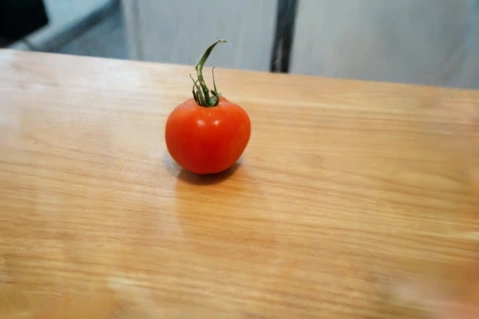
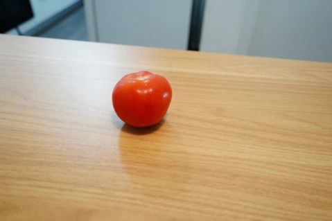
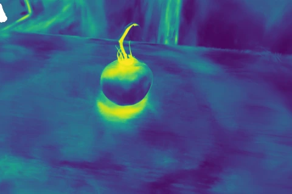
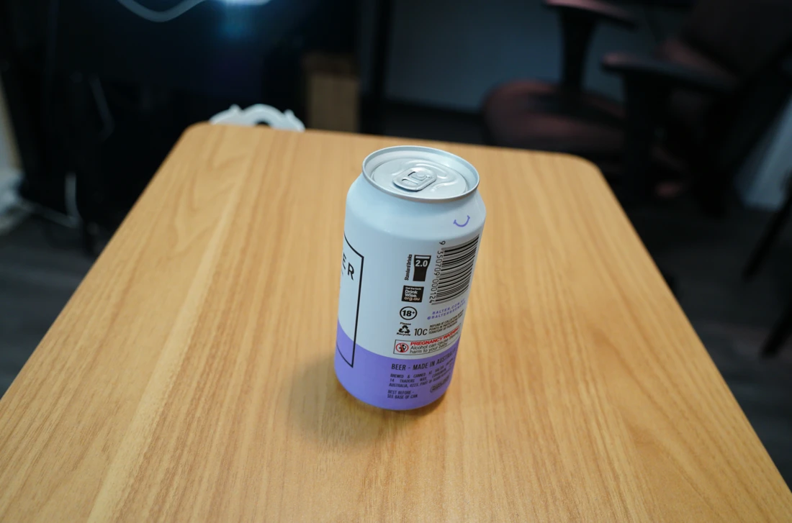
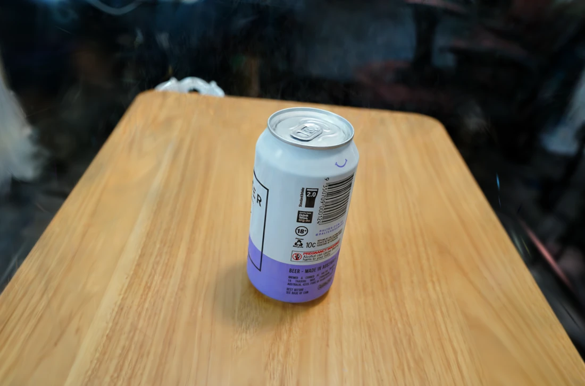
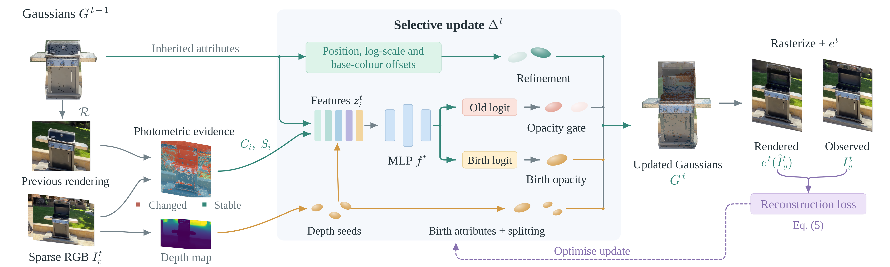

Reconstruct change. Keep the history.
The can changes shape across four visits. ReScene retains a reconstruction of each observed state.
3D GAUSSIAN SPLATTING · SCENE CHRONOLOGY
Reconstruct a changing scene.
Return to any observed state.
The can changes shape across four visits. ReScene retains a reconstruction of each observed state.
01 · LOCALISE CHANGE
Compare the preceding reconstruction with the new observation. ReScene attributes change and stability evidence to the Gaussians that contribute to each pixel.



This example shows the first update of Tomato from a selected training viewpoint. Purple indicates a low change weight and yellow a high change weight. Reconstruction errors and appearance differences can also produce a response, so the weights are evidence of image disagreement rather than labels of physical change.
02 · RETRIEVE A VISIT
All updates are complete. Select a visit to see its stored reconstruction beside the held-out observation.


Can · Visit 1 of 4 · recovered after the final update
Each view is an evaluated image. Cameras are approximately matched across visits. Selecting a visit changes the observed state without interpolating motion. Retrieval preserves the stored reconstruction, including its errors.
THE MULTI-STATE DATASET
Synthetic Multi-State
Four synthetic scenes cover folding, soft deformation, articulated motion and moving leaves. Each video completes an orbit before switching to the next observed state.
Folding and reopening
Bending, twisting and compression
Branch and leaf motion
Articulation and payload transport
Real Multi-State
Four real objects show deformation, articulation, material removal and changes in object configuration. Each video shows the captured object at distinct visits.
Tissue extraction and packet changes
Progressive material removal
Opening and crushing
Changes to the gimbal and its cover
Each video shows four selected states, including the first and last visit. The images are ordered around the object using their camera positions. These are dataset images, not reconstruction predictions. Framing varies in the real captures.
MAIN RESULTS
Results from the main paper across real and synthetic Multi-State, WAT and ChronoScene.
| Method | PSNR ↑ | SSIM ↑ | Storage ↓ |
|---|---|---|---|
| CL-Splats | 21.03 | 0.826 | 91.2 |
| Seq. ChronoGS (arrival) | 24.92 | 0.863 | 108.6 |
| Seq. ChronoGS (recall) | 18.90 | 0.774 | |
| Seq. LTGS | 21.87 | 0.844 | 304.7 |
| Seq. 3DGS | 24.02 | 0.861 | 410.5 |
| Ours | 25.40 | 0.873 | 163.6 |
| Method | PSNR ↑ | SSIM ↑ | Storage ↓ |
|---|---|---|---|
| CL-Splats | 29.34 | 0.942 | 220.5 |
| Seq. ChronoGS (arrival) | 32.07 | 0.954 | 108.7 |
| Seq. ChronoGS (recall) | 25.81 | 0.907 | |
| Seq. LTGS | 28.81 | 0.938 | 995.0 |
| Seq. 3DGS | 33.24 | 0.956 | 1673.3 |
| Ours | 32.71 | 0.958 | 352.2 |
| Method | PSNR ↑ | SSIM ↑ | Storage ↓ |
|---|---|---|---|
| CL-Splats | 18.10 | 0.731 | 174.7 |
| Seq. ChronoGS (arrival) | 27.42 | 0.891 | 368.0 |
| Seq. ChronoGS (recall) | 18.75 | 0.726 | |
| Seq. LTGS | 23.24 | 0.834 | 873.2 |
| Seq. 3DGS | 25.67 | 0.863 | 1816.1 |
| Ours | 25.59 | 0.861 | 375.3 |
| Method | PSNR ↑ | SSIM ↑ | Storage ↓ |
|---|---|---|---|
| CL-Splats | 18.74 | 0.605 | 1581.5 |
| Seq. ChronoGS (arrival) | 20.69 | 0.613 | 706.7 |
| Seq. ChronoGS (recall) | 16.53 | 0.467 | |
| Seq. LTGS | 19.41 | 0.617 | 5664.1 |
| Seq. 3DGS | 19.57 | 0.577 | 9618.7 |
| Ours | 21.09 | 0.642 | 2387.4 |
Arrival measures quality immediately after each update. Final recall measures quality after the last update. Seq. ChronoGS queries its latest shared model, so its two scores are shown separately. The other methods preserve arrival quality through stored histories. Scores are averaged equally across scenes. Bold marks the best final-recall quality and lowest storage. Higher PSNR and SSIM are better. Lower storage is better.
SELECTED COMPARISONS
After the last update, each method reconstructs the earlier visits. The camera moves within each state, and cuts separate the observed visits.
The tissue box changes between visits. ReScene recovers its earlier reconstructions after the final update.
The cloth folds and reopens across ten observed states. ReScene reconstructs each state without estimating the motion between visits.
These examples were selected to show ReScene’s strengths. Can and Tissue were chosen using PSNR margins at the original held-out views. Cloth illustrates deformation. The videos use the same camera path for every method within each visit. These nearby viewpoints have no ground-truth images or reported PSNR. ReScene, Seq. 3DGS and Seq. LTGS retrieve stored reconstructions. Seq. ChronoGS queries its final shared model.
THE METHOD
ReScene reconstructs a changing scene from sparse images collected at successive visits. It attributes image disagreement to individual Gaussians, updates the current reconstruction and stores each visit as an immutable update.

Compare the previous reconstruction with the new images. Accumulate change and stability evidence using each Gaussian’s contribution to the rendered pixels. Estimated depth supports surface placement and refinement.
Reduce the opacity of outdated Gaussians, refine selected positions, scales and colours, and add Gaussians for missing surfaces. Optimise these updates together using the current images.
Store the updated attributes alongside the initial model. Recover an earlier visit by applying its sequence of updates. Later updates leave that stored reconstruction unchanged, including any errors it contains.